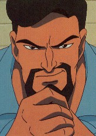
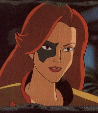

Attraction Christine Morgan (vecna@eskimo.com) comments welcome Author's Note: this story is a sequel to "The Tempest" and contains adult matter. Mature readers only, please. The characters from the show Gargoyles belong to their creators at Disney, and the others are mine. Author's Note additional: I've never actually been to the Four Seasons Hotel, so I apologize in advance for the errors.
SEATTLE, WASHINGTON, 1988 Three magazines lay on the glossy mahogany dresser. All of them showed the visage of the same man. Dark-haired, clean-shaven, piercing- eyed. In each picture, his expression was similar -- a slightly pleased smile that bordered on smugness, and a watchful glint in the eye. The words and background with each picture were different. On the cover of Globe Financial Report, against a white graph and black spiked profit line: "The New Wave of Millionaires." On Skyline Magazine, superimposed over a towering skyscraper: "The Aerie Building -- One Man Reaches Above the Clouds." And last but not least, V.I.P.'s glitzy hailing of "America's Most Eligible Bachelor!" Davis Xanatos flipped through the copy of Skyline again. He'd bought it at an airport newsstand just before leaving New York. His gaze lingered on the photos of the building, recently completed and shining like a jewel. "Three magazines in one week, not bad," he said to himself. "Four, actually," Owen Burnett said as he came into the room. Balanced on his long, pale hands was a silver tea tray, and tucked beneath his arm was a roll of newsprint. He set the tea service on the marble-topped table next to the window and passed the magazine to Xanatos. He unrolled it and groaned. "Billionaire Playboy Loses Forty Pounds on Miracle Diet. The Daily Tattler." "It could be worse, sir," Owen said, pouring the tea. "At least they do not have you linked with pornographic actresses and space creatures this time." "Look at this picture!" He ran his thumb over the blurry image. The man's mouth sagged, there was a suggestion of a double chin, the waist was thick and bulgy. "This isn't me! The after picture, yes, from the Staten Island Awards last month. But this!" "Sir, everyone knows those rags print nothing but trash." "Owen, millions of people actually believe every word." "Incredible. Tea?" "Let me see if it's on my miracle diet." He flipped through the magazine, scanning the headlines and captions, until his came to the article about himself. He read through the disgusting menu. "They're trying to poison people with this garbage. Eggplant? Not once in my life have I eaten eggplant." "I beg to differ, Mr. Xanatos. The mayoral honors banquet, three months ago. Stuffed eggplant and mushrooms." "Oh. Is that what that was?" He threw the magazine onto the bed. It slid off the satiny cover and flapped down on the far side. "Two sugars, Owen. If I've really lost forty pounds, I think I can afford it." Owen plunked two sugar cubes into the tea, passed it to him, and went behind the bed to retrieve the magazine. On the way, he smoothed the coverlet, aligned the drinking glasses on the nightstand, and pinched a lint speck off the curtain. "Let's have a little light, shall we?" Xanatos asked. Owen drew back the curtains. Sunset lay over Puget Sound, marvelously undimmed by smog, the light gleaming gold on the city of Seattle. "It is an attractive city," he observed. "Quiet, too. That's one thing I'm really looking forward to when we can move into the Aerie Building. The quiet. That and being perched godlike above everybody else." He looked at the magazines again, then into the mirror over the mantle. He rubbed his chin. "Maybe I'll grow a beard. These pictures make me look too young." "I thought that was your goal, sir." "To be young. Not to look young. I'm tired of having those bald old bankers call me 'son.' I didn't like being called 'son' by my own father, and I certainly don't have to put up with it from strangers. A beard might make me look older. What do you think, Owen?" Owen scrutinized him and finally said, "I believe a beard would make you look rather sinister, sir." "Excellent!" He sipped his tea. "Did you bring up a local paper?" "No. I will attend to it right away." He inclined his head, then left the hotel room. Xanatos leaned back in his chair, watching the quiet and clean bustle of downtown Seattle, and smiled. It had only been six months, but already he didn't know how he had managed without the capable service of Owen Burnett. Hiring him had been the best investment yet. He'd recognized Owen's name at once, being exceedingly surprised to find his resume among the pile of applicants. He well-remembered the man, as well as everything that had happened fourteen years ago on Halcyon Renard's island. That had been a full year before he'd gotten the mysterious package, the one his father still ranted about. The one that had contained the ancient coins that got him started on his vast fortune. Prior to that, he had been trapped by his father's will and his own indecision. He'd known that he wanted to be more than a fisherman, that he was _destined_ to be more, but had no idea how to start, no means to begin making something of himself. He'd led the Nereid to destruction in the storm, disappointing his father. All of his explanations had fallen on deaf ears. Petros Xanatos would hear nothing of computers and scientists and secret research stations and weather control. It mattered nothing to him that young Dave had managed to shut down Renard's computer moments before it would have let loose hurricanes all over New England. It had been a year of misery. He'd finished high school with top grades but there had been no money for college, and his father, despite his scorn, continually reminded him that he was needed to help with the fishing. And then the coins had come. Once he'd realized their worth, he was on his way with no looking back. He'd repaid his father ten times the worth of the Nereid after he made his first million, but the senior Xanatos had turned around and donated the money to charity. It was then that David knew for sure that he could never win his father over. It had been easy to shuck his past life, like a phoenix shedding its ashes and flying out into a bright new future. He'd only been back once, three years ago, for a ten-year high school reunion. The only reason he'd gone was to see his former friends still with the cracked, chapped hands of the sea, with dumpy wives and obnoxious children. While he, one of the country's youngest millionaires, showed up in his own limousine with that year's famous beauty hanging mink-clad on his arm. At first, he'd enjoyed the looks of barefaced envy, but eventually the whole thing had depressed him. It had amused his date, though, who proved to have an I.Q. to match her bust size. Even allowing for her formidable endowment, it still left her about as intellectually challenging as a potted plant. Owen reappeared with the local paper, just in time to prevent Xanatos from slipping into a morose mood. "Well, let's see if anything is going on in town," he said. "The Seattle Seahawks are playing at the Kingdome," Owen suggested, unfolding the paper. "Bleah." Xanatos turned to the entertainment section. "Hmm. There has to be something else." Owen picked up the handy guide book the hotel had left in the top drawer, next to the ever-present Bible. "The Underground Tour? Pike Place Market? Woodland Park Zoo? Dinner at the world-famous Space Needle, perhaps?" Xanatos snorted. "God save me from touristy things. There's always too many tourists." He turned a page, paused, and grabbed hastily for the copy of the Tattler. "Is everything all right, Mr. Xanatos?" "Owen," he said, tapping the newspaper and not even looking up, "get tickets to this show for tomorrow night. Find out if there's a reception afterward, and get invitations to that as well." Owen came around to peer over his shoulder. "A magic show, sir?" Volumes of skepticism and disbelief were packed into those four words. "Yes. A magic show." A quarter of the page was taken up with an elaborate advertisement, surrounded by coiled dragons blowing steam or smoke. The ad featured a picture of a young man in a flowing cape, with a piercing stare to rival Xanatos' own, making a dramatic and supposedly magical gesture. Bannerlike lettering spelled out "Mysticus -- The Magic of Lyonnes." The Daily Tattler was open to its feature that might as well have been entitled "Sleazy Snapshots of Famous People." Xanatos focused on one in particular, a photo of that same man with the piercing stare, dressed in a tuxedo and sporting a tall and beautiful woman on his arm. The caption read: "Rumors of romance between famed magician Lyonnes and his assistant Fox add magic to their performance." * * Seattle's Paramount Theater was old and cavernous, every inch covered with ornate gold-patterned wallpaper, intricate and beautiful scrollwork, and exquisite detail. Sparkling chandeliers flanked the stage, which was draped in thick black. The seats were plushly upholstered. If they were also slightly uncomfortable, David Xanatos didn't pay it any mind. "Nice work, Owen," he said. "Especially on such short notice." Owen, who had seemed vaguely bemused all day at the idea of going to a magic show, nodded in acknowledgement. "The candlelight and champagne reception is at the Four Seasons Olympic Hotel, sir." "Well, that is convenient, isn't it? We won't have to worry about parking." The lights went down and an expectant hush settled over the audience. From hidden speakers, low music swelled into a thrilling crescendo and lasers began to play over the closed curtain. The magician Lyonnes (French-born, according to the eight-dollar program that seemed to be little more than carefully-posed pictures of the man) was known for lavish, sensuous productions that rivaled David Copperfield. His choice of music was classical, with deep compelling strains and sudden roars of percussion. His choice of stage setting was deliberately erotic, as they saw when the curtains parted to reveal what appeared to be a harem. Lithe- bodied women lay languidly on pillows, or twined themselves suggestively around marble statues of Greek gods. Xanatos leaned forward intently, looking searchingly from one woman to the next, but he didn't see the one he sought. The act went on, something about a caged lion that turned into the tawny-haired Lyonnes, who then escaped his cage to prowl seductively among the women, locking two of them in the cage and then turning them into lionesses. When the stage went dark and the crown burst into applause, Lyonnes came forward into the spotlight. His accent was so thick that it might have been poured from a blender, and it was almost certainly faked. He did a couple of sleight-of hand tricks, flirting with ladies in the crowd and always leaving them with a kiss in exchange for the loan of a ring or a glove. In the shadows of the theater, Xanatos noticed that Owen's bemused look was more evident than ever, and he even occasionally stifled a snicker, which was something Xanatos previously would not have thought possible. Lyonnes returned to the stage as two male assistants rolled out a table with a large black velvet top hat on it. "Ladeez and gentlemen," he said, "To pull ze rabbitte from ze hatte is ze oldest magic trick, no? And so I weel not do it, but instead pull from ze hat ze rabbitte's worst fear, ze fox!" With a flourish, he lay a silk scarf over the hat. The scarf rose up in the shape of a hand. Lyonnes whisked the scarf away to reveal a woman's hand questing and turning. Slowly, the hand reached up, extending an arm. It was joined by another. Lyonne flicked at the fingers, which sought to grab him playfully. The woman's head appeared. Her features were flawless, lips curved in a smile. Sparkly red paint formed a foxhead around her right eye. Red-gold hair flowed over her shoulders as she rose out of the hat. The table looked too small, the hat not deep enough to conceal a person. The illusion was very clever, but all Xanatos cared for was watching the woman as she gracefully emerged. Her exciting figure was encased in a tight red costume with a gold wraparound filmy skirt. Her legs were impossibly long and smooth in glittery tights. She stepped from the hat and stood balanced on the table, then accepted Lyonnes' hand and jumped lightly to the stage. "Ladeez and gentlemen," Lyonnes cried, "my asseestant, Fox!" "Oh, Fox, you've grown even more beautiful than I remember," Xanatos breathed admiringly. "You know her, sir?" Owen asked. "Know her?" Xanatos chuckled. "I _named_ her! And I'm surprised you don't recognize her. You used to work for her father." Owen raised an eyebrow. He removed his glasses, polished the lenses, replaced them, and looked again at the woman. "Janine Renard?" "I wondered what had ever happened to her." "She ran away from home several years ago. Mr. Renard hired the best private detectives to find her, but even when they successfully brought her back, she never stayed more than a few months. Eventually, his ex-wife ordered him to let her alone, and he complied. He always hoped, however, that she would come to her senses and return, to help him with the family business." "He and my father really should have gotten together," Xanatos mused. "They've got a lot in common. If I ever have kids, Owen, and I ever act like my father, be a good fellow and step on me, would you?" "As you wish, Mr. Xanatos." The show went on, one spectacular illusion after another. Lyonnes levitated Fox on a column of smoke. Lyonnes conjured roses from the air and presented them to her. Fox, wrapped in chains, escaped seconds before she would have been lowered into a pit of leaping flames. Lyonnes, about to be crushed by two brick walls, passed through one. In between tricks, the other women danced and writhed. Xanatos could hardly keep his eyes off of Fox. He had been drawn to women before, but never like this. She'd been on his mind for years, ever since they parted on Renard's island. She'd gone to Boston with her wounded father, and he had gone back to Bar Harbor to face his father's wrath. Like a fool, he hadn't given her his address or phone number, and he had no way of contacting her. By the time he was wealthy and influential enough to measure among Renard's peers, she had dropped from sight. If Renard realized that the David Xanatos who was founder of Xanatos Enterprises was the same man as the David Xanatos who had visited his island, he gave no sign. It may have been an intentional lapse, to avoid finding himself awkwardly indebted to his competitor. They were rivals now, both racing for discoveries and patents. Cyberbiotics Inc. was years ahead of Xanatos Enterprises in terms of developing robotics and artificial intelligence. Someday he'd have to do something to catch up. Maybe it would even be something honest. "For ze finale of our show," Lyonnes announced, "we will do somesing you have not seen before. You have seen other magicians make large objects vanish, no? Always, zis is done behind curtains or walls, no? Tonight, for ze first time, ladeez and gentlemen, I will make ze lovely Fox disappear before your very eyes! No curtains, no walls! You will see everysing!" The crowd murmured its doubt, which made Lyonnes beam broadly. "You do not believe me! Observe, and prepare to be amazed!" Fox came forth, now wearing a gold cloak. She pushed back the hood and looked out into the audience. For an instant, her eyes seemed to meet Xanatos' and go through him like a bolt of lightning, but if she was similarly affected, it didn't show. Another assistant, a short brunette with abundant cleavage and red, pouty lips, brought out a tray with a cloth over it. She peeled back the cloth and Lyonnes picked up a wand. He trailed it down her cheek, over her lips. She nipped lightly at it and he pulled it away from her mouth, then ran it down her throat and over the upper swells of her breasts. Most of the men in the crowd were watching this pantomime hungrily, and many of the women were watching their men warningly. Xanatos watched Fox, admiring her proud, aloof stance. He did notice that the wand was hardly what he would have expected. Given the lavish, overdone elegance of the rest of the sets and costumes, it should have been some jeweled scepter or slim carving of ivory. Oddly, the wand was an ordinary gnarled stick. At last, Lyonnes finished teasing the brunette with the wand. The lights went down until Fox was at the center of a bright circle with Lyonnes moving fluidly in and out of the shadows. He waved the wand in grand patterns and designs. The end of it began to glow with faint blue light. Xanatos heard a crumpling noise and realized that Owen was sitting bolt upright, his hands clenched around the slick paper program. He had only been around Owen a short time, but didn't like the look of wide- eyed alarm he saw on the blond man's face. Lyonnes chanted something in what sounded like Latin. The blue light grew brighter. Lyonnes swept the wand in a circle. Fox disappeared. Not abruptly, as if dropping through a trap door, but a gradual fading, like the reverse of a Polaroid picture forming out of greyness. When she was gone, the cloak remained, an empty shell holding her shape. The crowd went wild. Lyonnes bowed to them and gestured at the cloak. He passed his hands over it to show that there were no wires, then walked a few paces away and beckoned. The cloak clasp unfastened itself and the cloak lost its shape as if it had just slid off a pair of invisible shoulders. For an instant, the audicence could see the material clump as if being handled by invisible fingers, and then the cloak was tossed through the air. Lyonnes caught it, swirled it around himself like a bullfighter, and the stage went dark. Thunderous applause rocked the theater. The only person not clapping was Owen Burnett, who looked seriously troubled. "Lighten up, Owen," Xanatos said. "It's only a trick." "Can you explain how it was done, sir?" "If I could, I wouldn't be in the audience." He shrugged. "It's magic." Owen fixed him with a sharp stare. "Do you believe in magic, Mr. Xanatos?" He passed it off with a laugh. "I believe in possibilities, Owen. If that includes magic, well, fine." "That is one more respect in which you differ from Mr. Renard." "I'm the one who spent twenty grand on a book of magic spells eight years ago. I'm the one who built the tallest building in New York because I'm actually thinking about bringing a moldy old Scottish castle to put on top of it. Not only that, but I'm meeting a man on Sunday to talk about a supposed magic jewel. I either believe, or I'm out of my mind." "And you are much too successful a businessman to be out of your mind." "Thank you, Owen." The stage lights came back up before he could pursue the matter further and find out what was bugging Owen. Lyonnes strode forward and the applause turned into cheers. Someone in the front row stood up, and then everyone was doing it, standing and clapping madly. A rope uncoiled and dangled next to Lyonnes, and Fox slid down it to land at his side. He took her hand, raised it, and they both bowed. "Merci, Seattle!" Lyonnes called. * * The Four Seasons Olympic Hotel lived up to its reputation of excellence. The reception was held in a ballroom that was quietly opulent, the sheen of marble and rich fire of mahogany only accents amid tasteful colors, muted patterns, and subtle arrangements of light that flattered even the most drab. The staff, white-jacketed, circulated with champagne and fanciful edible creations. Cream puffs made to resemble swans, strawberries sliced into paper-thin rosebuds, smooth salmon mousse molded into fish shapes and served on crackers shaped like seashells. He saw her across the crowded room, like a scene from an old movie. She was Aphrodite risen from the sea, garbed in the fabric of the sunlit waves. Her red-gold hair was loose, glinting in the candlelight, the sort of hair that made every man present yearn to feel its silky texture. The foxhead mark around her right eye had been redone in sea blue to match her gown. Her only jewelry was a teardrop sapphire pendant surrounded by small diamonds, on a fine gold chain. She sipped from a crystal champage glass and nodded gratefully as she accepted compliments. "Fox?" he said. She turned toward him, the glass held against her lips, her expression polite and questioning. "Do you remember me? David Xanatos." "Dinner and a movie," she said immediately. Her eyes outshone the diamonds around her neck, her voice rang with genuine delight. "I still owe you that date. Care to take me up on it?" "I've been waiting fourteen years to hear you say that!" She slipped her hand into the crook of his arm. "The steak place in Bar Harbor closed ten years ago." "Oh, no!" Her laugh was very different from her girlish giggle, a laugh that sent pleasant shivers up his spine. "But at least now I don't have to beg my father for money." "And I don't have to beg mine for permission." The men that had been gathered around her dispersed, reminding Xanatos of a dogpack withdrawing once the alpha male made the scene. "I've seen you in magazines," she said. "And in television interviews once or twice." "Why didn't you try and get in touch with me?" "I knew you'd find me one day." She winked at him over the rim of her glass. "Did you chase me all the way to Seattle?" "I wish I could flatter you and say yes, but I'm here on business. Meeting with some men in Renton to talk computers. I saw your show advertised in the paper. Besides, trying to chase you would be like trying to capture the west wind." "I'm sure you know about that, with all of those women trying to catch you," she teased. "I saw the V.I.P. article. America's Most Eligible Bachelor." He shrugged and grinned at her. "Can I help it if I'm the only unattatched billionaire in the country who doesn't look like an anemic weasel?" "Ooh, modest too!" "But enough about me. What about you? I mean, a fox like you has got to have a boyfriend." "Deja vu, I do believe I've heard you say that before." "I'm still curious." "And still direct." "Unlike you. You're dodging the question." "If I had a boyfriend, would I have agreed to our date?" "If you had a husband, I'd certainly hope not, but there's no ring on your finger." He lifted her hand to his mouth and kissed it. "No ring. No husband. And no boyfriend either, for that matter." Xanatos looked over at Lyonnes, who was holding a group of ladies spellbound with his witty chatter. "Not even him? I've seen you in magazines too, though I wouldn't really call the Daily Tattler a magazine" Fox pealed laughter. "Lyonnes? David, darling, he's just as gay as Paris in the spring. He'd be more likely to make a pass at you than at me." "Well, it sure doesn't show in his work." "Would it sell as many tickets if it did?" "Good point." "He is giving me that look, though. The one that says if I want to stay his partner, I'd better get out there and mingle." "First your father, now this guy. When are you going to really strike out on your own?" "You mean as a magician? I've tried, but it's the men that are the big names in magic." "What about acting?" "I used to do stunt work. Did you ever see Electra-Woman vs. the Queen of Mars?" Xanatos laughed. "That one must have slipped by me somehow." "Not surprising. I was Dyna-Girl's stunt double. Impressive screen credit, huh?" "I'm sure you were fantastic." "Oh, I was. Nobody can fall into a Martian volcanic crater the way I did!" Lyonnes was glaring in their direction, which gave the rest of the people the impression that the magician was jealous. Fox laid her hand on Xanatos' shoulder. "I really should go be social. How about Sunday? We have a show tomorrow, but we don't leave for Vancouver until Wednesday." "Sunday ... I'm meeting with Wulfstan at ..." "Three o'clock, sir." From behind him. Fox's eyes went huge. "Oatmeal!?" Owen looked pained. "Good evening, madam." "Oatmeal! I don't believe it!" She gave him a quick hug, which he endured with all the emotion of a Buckingham Palace guard, then paced around him. "You haven't changed a bit!" "Ah, Owen, there you are. Perfect timing, as usual. You remember Fox?" "Assuredly, sir." His expression flickered just for a moment. "A most ... interesting show. Particularly the final illusion." She tossed her head and laughed throatily. "Even_I_ don't know how that one works." "No. Of course not." Owen frowned. "Mr. Xanatos, will you be requiring me for the rest of the evening?" "No, I think I can find my way upstairs by myself." Owen nodded brusquely and strode off. Fox watched him go, then turned back to Xanatos. "Now how did you get ahold of him?" she demanded. "Don't you know my father liked to use him and Vogel as matching bookends?" Xanatos shrugged. "His resume appeared on my desk. He was the most qualified. To tell the truth, I don't know how I ever lived without him." "What are you doing on Sunday? Strange time for a business meeting." "It isn't exactly business. I have to see a man in Ballard, and it's the only day he had free. Seventy-four years old and still works five days a week. Saturday is his fishing day." "Not a religious man, then." "From the epithets peppering our phone conversation, I'd have to agree with you. But he's got something that may be well worth my while." "Maybe I could come with you? I've heard that Ballard is very ... quaint." He looked her up and down with a rogue's eye. "Why not? If he's still as vital as he sounds, it couldn't hurt negotiations to have a beautiful woman along." "It's a date. We're at the Westin Hotel. That's the round one with two towers. Room 1018." "I'll be there." "Wonderful." She kissed his cheek. He caught a faint whiff of musky perfume and felt the gentle press of her breast against his arm, and knew they were going to sleep together. Knew it not like the flare of a light bulb -- eureka! -- or as wishful thinking, but as a simple fact of nature, as inevitable as the change of seasons. As she moved off into the crowd, she glanced back and in her turquoise eyes he saw that same knowledge. * * She was brushing her hair by the window and enjoying an anticipatory daydream of making love to David when Lyonnes burst into her room. His face was milk-white, his full-lipped and normally sensuous mouth gawping and gaping like a landed fish. Fox shot to her feet, sure that he was having a heart attack or a stroke. The gargling moan he uttered only reinforced her conviction. She reached for the phone. He grabbed her by the shoulders. "Gone!" he gasped. "Let me call a doctor!" "Gone! Eet eez gone! We are ruined! Mon Dieu!" Not dying, just hysterical. She slapped him briskly, driving him to his knees. He clutched her bathrobe, looked up at her. Her handprint was outlined in red on his cheek, but his eyes looked more clear. Until, that is, they welled up with tears and he buried his face against her thighs like a tantrumy four-year-old clinging to his mother. "Ze wand eez gone!" he blubbered. Fox's nose wrinkled in distaste. She tried to step away from him but he had both arms around her legs and still had ahold of her bathrobe. "What are you talking about?" "Ze wand!" he wailed. "Eet has been stolen! Oh, sacre bleu, we are finished!" God save me from prima donna performers, she thought. He'll be tearing his hair and beating his breast next, wait and see. "Lyonnes," she said soothingly, "it's all right. We'll use one of the rehearsal wands." "No! No! Stupid strumpet, you do not understand!" Partner or not, she kneed him hard in the chest. Her robe ripped as he flew backwards. When he was sprawled on the carpet, goggling up at her in disbelief, she kicked him in the hip. "Don't call me a strumpet!" "Sorry!" he said meekly. His contrition held for a full five seconds, and then his eyes flooded again. "But, Fox, mon cheri, ze wand has been stolen!" "You said that already. Get a grip. It was a prop, not your you- know!" "No," he snuffled. "Eet was much more zan zat. Eet was everysing." "If your accent gets much worse, I won't be able to understand a word you're saying." She felt cold, hard, and bitchy. Her pleasant daydream rudely interrupted by this sniveling Frenchman ... "We'll get you a new wand, okay? Why you were so attatched to that ugly old thing is beyond me anyway." He rose, trying to recover his dignity, which couldn't have been easy with a bruise already spreading on his hip and runners of mucus streaming from both nostrils. "I should never have come to you with zis," he declared. "You are just a second-rate showgirl. Why did I ever make you my partner?" "I've just about had it with you, Lyonnes!" she flared. "Your haughty duchess routine might work on the rest of the team, but not me! Without me, you'd still be stuck in Reno." "Zat eez not true!" "Yes it is! If I hadn't reworked your choreography, suggested those new routines, designed the costumes and sets --" "I do not have to take zis from you! You are fired!" She drew back her head like a cobra about to strike. Her shoulders tensed, her arms relaxed, and she knew she was about a half-second from ramming the heel of her hand up under his aquiline nose and sending it in splinters into his cheese-and-Bordeaux brain. Instead of resorting to violence, she summoned a gentle smile. "I hope you find your wand, Lyonnes. Because I know just what you can do with it!" "Get out! Out of my sight!" he shrieked. "Go find zat reech boyfriend and see eef he weel tolerate zat mouth of yours!" This time she let her hands move. They shot out, caught Lyonnes by his tawny-gold hair, and pulled his face close to hers. Kissing distance, or biting distance, and she knew both probably terrified him equally. "Jealous?" she inquired sweetly. "Let go of me!" "I'm giving you a choice, Lyonnes. You are leaving my room, but you can choose whether it's by the door or the window." His frantic eyes stuttered to the curved picture window. "I bet if I got up enough momentum, you'd land on that monorail track," she whispered. "I'll take ze door," he whined. "Good." She let go forcefully, sending him reeling back. He regained his balance easily but not his composure, and fled without a backward look. Fox sighed. She took off her ruined robe and went to the window. "Maybe that monorail is a little far," she mused. "Well, David, you were right about striking out on my own." She chuckled, wondering if there were still tickets available for tonight's show. It would be interesting to see how they did without her. She heard a muffled shriek from elsewhere on this floor. That would be Connie, her understudy, having just found out that for the first time she would be onstage. Fox felt free, wonderfully free. She wished she could thank whoever had stolen the wand and provided the catalyst. That thought gave her pause. Why _would_ someone steal the wand? With all the expensive, valuable props they had, why the wand? It was just a plain piece of wood ... * * It was just a plain piece of wood. Nonetheless, Owen handled it with gloves and a pair of kitchen tongs. He was pretty sure his human guise would protect him, but there was no sense taking chances. He could hear Mr. Xanatos in the shower, not singing, certainly, but talking to himself about business deals and plans for the future. Of special interest lately, now that the Aerie Building was complete, was their pending trip to Scotland. The diplomatic concerns of buying a castle, especially with the intent of transporting it to America, could hold up the process for years. In the meantime, though, castles and gargoyles and the Grimorum were the least of his concerns. He had the wand to deal with. Hecate's Wand. After all these years, surfacing in the hands of an effeminate stage magician who was lucky enough (or unlucky, depending on one's perspective) to have genuine sorcerous potential. Good old Hecate. She'd actually had the nerve to challenge Oberon a while back, claiming that those who had become gods should no longer have to bow to the whims of the Lord of Avalon. If the other "gods" had joined her, their little rebellion might have actually stood a chance. But man-hating Hecate had no use for Odin and Zeus and their followers, all of whom were too wise or too fearful to dare speak against Oberon, and most of the "goddesses" were Hecate's enemies for reasons of their own. So it was that Hecate and her three daughters had to turn elsewhere for allies. She had brought a mortal to the true home of the fey. A human, a sorceress. A woman of mortal and magical power, gifted with a wand made by Hecate herself. The fey were forbidden to speak or even think of the battles which had followed. The conflict had drained much of Avalon's magic, so much that the paltry stuff of the mortal world looked a banquet by comparison, until Oberon was forced to disperse his children to the corners of the earth in order that they might survive. The sorceress had done the most harm to Avalon's Lord. With the wand that was dangerous for mortal male or female fey even to touch, deadly for male fey, this mortal female had weakened Oberon severely. Had not Queen Titania stepped in, all might have been lost. When both sorceress and wand trembled on the edge of oblivion, Hecate had chosen to save the wand, hiding it somewhere in the mortal world. Eventually, Oberon's will or determination or bull-headed stubbornness had won the day. Hecate's daughters were offered surrender on Oberon's terms and, being not fools, accepted. Hecate herself was banished to the nether realms, where doubtless her essence still howled its hatred to this day. And now her wand rested atop Owen Burnett's briefcase. Lyonnes, his preferences bending rules that Hecate had apparently not thought of (although, you'd think a Greek goddess might've considered it), had been able to make the wand work. Could Fox use it? Owen was doubtful. Fox's powers, if there were any, would come from her fey blood. The wand needed the power of a female sorceress. Not exactly the sort of thing one could find in the Yellow Pages. If a sorceress could be found and trained, the wand would add a weapon of tremendous power to Mr. Xanatos' arsenal. In the meantime, however, Owen couldn't chance it falling into the wrong hands. He resolved to seal it securely in an iron strongbox as soon as they returned to New York. That would keep it hidden from Oberon's eyes, if ever Avalon's Lord decided to go looking. He snapped his briefcase shut just as Xanatos emerged from the bathroom. Little did the young billionaire know it, but this trip to Seattle had already netted him one magical item, and he hadn't even begun his negotiating. * * "I left before intermission," Fox said. "I just couldn't take it anymore." "That bad?" Xanatos asked. He leaned forward and passed Owen a slip of paper with directions written on it. "It was agony. Connie, my understudy, tripped coming out of the hat and fell headfirst into the orchestra pit. And, believe it or not, things went downhill from there." "So, now that you're gainfully unemployed, what next?" She shrugged. "I don't know. I've got plenty of money. Maybe I'll start my own television game show. Set up an obstacle course, challenge people to fight me for prizes ... who knows?" "No rush. You'll think of something. Or I will." "I'm sure you will. But where are we going?" "Ballard." "Yes, David. I know that, David. Why?" "You'll see." He grinned. "Question, Fox. Do you believe in magic? Really believe?" She thought it over. Xanatos noticed that Owen was listening intently, although his attention never wavered from the road. "I never really considered it," she finally said. "Sure, there are some things that can't be explained, crop circles and all that --" "Aliens," Xanatos scoffed. "Whatever. Now that you mention it, Lyonnes sure did think there was something special about that ratty old wand, and he never did explain just how the invisibility trick worked." She laughed. "Maybe it really _was_ magic!" "Wonder who stole it?" Xanatos mused. "And why?" "Pardon me, sir," Owen interrupted, "but this would seem to be the address." "Ah. Here we are." Xanatos opened his door and recoiled as a strange smell hit him. He looked at the building in front of which they'd parked. It was some sort of a fish market. The address of Lars Wulfstan was in one of the apartments upstairs. "Oh, uck," was Fox's opinion as she caught a sniff. "What is that?" Xanatos read the signs on the market. "Something called lutefisk, apparently. Owen, any idea what that is?" "No sir. Nor do I care to find out." "Might as well. It'll give you something to do while you wait." "I can find other ways to occupy my time, Mr. Xanatos." Owen retreated into the car and rolled up all the windows. Through the dark-tinted glass, Xanatos saw him pull a book out of the glove compartment. "It's not so bad once you get used to it," Fox remarked. "Dinner here, then? I'll just have Owen cancel our reservations at Benjamin's --" he turned toward the car. "Oh, no you don't!" She sprang after him and wheeled him back around. "You win. This way." He led her to a narrow door which opened onto an even narrower throat of wooden stairs. Apartment 6 was at the end of the hall, at the rear of the building. Other smells, of cooking and dust and general age, blotted out the fish market. Xanatos rapped on the door. A different door, belonging to Apartment 3 down the hall, opened a tiny crack and a suspicious eye peered out. Fox smiled charmingly and waved, causing the eye to draw back and the door to shut. Door 6 opened and Xanatos, expecting a shrunken old man, was startled to find himself looking up two inches. The face he saw was deeply wrinkled, weathered and leathery, framed with a thick yellow-white beard. "Mr. Wulfstan?" "Yes." "David Xanatos. We have an appointment." "Right. Come in." The large man turned in the doorway, giving them room to barely squeeze past his bulk. He was not obese but thick, a solid block covered with a thin layer of fat. His blue eyes were bright behind wire-rimmed spectacles that did nothing to give him a Santa-like appearance, especially as his gaze lingered approvingly on Fox. The apartment was small, the drawn blinds making the peeling and water-spotted walls look even shabbier. The furniture was clearly second- hand. In the tiny kitchenette, floor tiles curled up in the corners. An amazingly fat tomcat was snoozing in the middle of the threadbare rug, and another was atop the television, overlapping a good portion of the screen. Lars Wulfstan waved at a couch whose original upholstery was only surpassed in hideousness by the slipcover's pattern and settled himself into a gigantic recliner. The moment Fox and Xanatos sat, the cat on the floor trundled over and hauled itself into their laps. The feline must have weighed at least thirty pounds. Ten years of business meetings in clean, well-lit offices and cocktail parties in fancy hotels had somewhat spoiled Xanatos for the charm of Wulfstan's abode. For one thing, it reminded him too much of the poorer folks he'd known as a kid. His own house might well have looked like this, if his father hadn't been such a hardworking man and demanding taskmaster. Fox, beside him and stroking the cat (when it purred, the whole couch vibrated), wore a polite little smile, but something in her eyes told Xanatos that dinner was going to have to be exceptional to make up for this. "Didn't know if you'd come," Wulfstan said. "Here I am," Xanatos replied. "As I said on the phone, I am very interested in the item." "Hmph." "Could you tell me more about its history?" he prodded. "Most of it is superstition," Wulfstan declared. "Magic. Bull! Showed it once to a palm reader over on Greenwood, and she just about wet herself at the sight of the thing. Just goes to show you, those psychics are full of more crap than a cow pasture." "It's been in your family for some time, I understand," Xanatos said. "Family?" Wulfstan laughed. "Yeah, it's been in the family. For hundreds of years. Going all the way back to the Vikings, that's how far we Wulfstans can trace our family line. Right back to the Vikings. Do you believe that happy crappy, my boy?" Xanatos winced and his smile felt frozen onto his face. If there was one thing he hated ... "The Vikings, wow!" Fox said quickly, pretending to be thoroughly impressed. "Bill Thormont, he's one of the board for the museum, he's been after me for forty years to donate the thing. What good would that do, I ask you? And family, pagh! Got no kids. My Elke, she's 'most thirty years in the ground, and we never had kids. Got one nephew in all the world and I'd no sooner leave it as a legacy to him than I'd spit in my hat and wear it backwards." "Why?" Fox asked. "You want to know, missy?" "Yes," she said, although it was clear to Xanatos that she cared about as much for being called 'missy' as he did for 'my boy.' Wulfstan heaved himself out of his chair and rummaged through cardboard boxes on a shelf until he came up with a thick album. "Now, here's my Elke," he said, flipping to an old black-and-white photo of a round-faced, smiling blond. "Isn't she sweet as cream?" "Very nice," Xanatos said, thinking to himself that this was an hour of his life that he'd never get back, and if not for Fox's presence, the whole day would be a waste. Turning all the way to the back of the book, Wulfstan grimaced. "My brother Johann, he had three boys and a girl. Graeme is the only one left, and he was always the worst of them. Runt of the litter, you know, at least until he was fourteen. Turned him mean. Always fighting other kids. Shot up like a giant before he was out of school. When he was eighteen, he joined the army. Might as well get paid for doing what comes naturally. Never did have the patience for fishing or the temperment for working the docks. The heartache that boy caused his parents, I can't begin to tell you ..." Xanatos and Fox exchanged a glance and immediately had to look away from each other or they both would have burst out in laughter. Which probably would have resulted in this retired behemoth beating the stuffing out of them. "Ah. There's Graeme, the last picture he sent me. After he got out of the service -- dishonorable, to top it all off -- he was in and out of jail a couple of times. Good thing Johann was dead by then. Can you believe it, a family going all the way back to the Vikings, and this is what we get." He showed them the picture, not really a photograph but a program. It showed a man who was easily Wulfstan's own height and build, lacking the layer of fat. He was also clearly Wulfstan's kinsman, with a huge bristling grey beard and a long grey ponytail. He wore a tight costume with a wolf's head on the front, and was holding an equally-muscular man dressed like a ninja overhead in an airplane spin. "A professional wrestler," Fox said. "Calls himself the Grey Wolf," Wulfstan said, shaking his shaggy head disdainfully. Xanatos said nothing. He actually felt the wheels start to turn in his head as he looked at the picture. The wolf and the ninja. A slow grin spread across his face. "Ah, but you're not here to look at this." Wulfstan slammed the album and lumbered back to the cardboard boxes. "Let me get the jewel ..." "David?" Fox murmured. "What are you thinking? You've got a very devilish look." "I'm thinking I might have the perfect career option for you, my dear." "Here it is." Wulfstan shoved a wooden cigar box at Xanatos. "Whyn't you have a look at that and tell me if you think it's worth your while? Then we can start talking money." Xanatos nodded and opened the box. Inside was a wadded-up floral scarf. He unfolded it, and couldn't help but draw in a sudden breath. Fox, leaning over his shoulder so that her chest pressed familiarly against his back, gasped. The gem was bluish-white, polished and smooth, unfaceted. It resembled an opal but wasn't an opal. Maybe moonstone, or some form of cloudy diamond. It nestled in a setting of gold loops and whorls. "Beautiful," Xanatos breathed. "It's called the Eye of Odin," Wulfstan said. "You familiar with Norse legends?" "Afraid not. My father rammed Greek mythology down my throat as a lad," Xanatos said, still gazing at the gem. It almost seemed to glow, to hum, as if it did store some strange power. He listened with half an ear as Wulfstan went on about Odin, nodding when it seemed like a response was needed. His attention snapped back when he heard mention of money. "Beg pardon?" "How much do you think something like that might be worth to you?" Xanatos let the scarf fall back over the jewel. "Well, Mr. Wulfstan, I suppose a better question would be, what do you think it's worth?" * * "What a lovely view!" Fox said as the waitress led them to their table. Benjamin's restaurant was on Lake Union, its panoramic windows offering a view of the marina, the lake, and the hills that cradled some of Seattle's older neighborhoods. Sailboats, lovingly-restored crafts from the Center for Wooden Boats next door, and seaplanes were among the visual feast. Their booth was on a raised level set back from the windows, overlooking the lower tables and enjoying an unobstructed view. Many of those tables were already occupied, with quiet and well-dressed parties. Fox drew a lot of attention in her short black silk dress. It was sleeveless, the back made up of dozens of spaghetti-thin straps crisscrossing her creamy skin. When she'd first appeared at the door of her room and pirouetted in front of Xanatos, the hem had flared up to show him that her stockings were really stockings, complete with garters. Her hair was piled high with some ringlets dangling to brush her bare shoulders, and she had repainted her foxhead in glittery black. Xanatos himself wore a nice Italian suit with a forest-green shirt, and was the recipient of as many admiring glances from women as Fox earned from the men. They made a stunning couple, that much was for certain. Over drinks, he outlined his plan. She listened raptly, a smile growing. "David, that is a wonderful idea!" "Practical, too. I already have security guards, but there might come a time when a personal commando team would come in handy." "I know a couple of others who would be interested," she said. "We did alternating shows at a place in Atlantic City last year. A brother-and- sister daredevil team, just kids but awfully talented." "Sounds good. Even if the other duties are never needed, it's a smart business move. The merchandising, nationwide tours to do live stage shows and sign autographs ..." "Breakfast cereals ..." "Athletic shoe commericals ..." "And after a few years a full-length movie!" "Why not a theme park?" he suggested. They laughed together. She laid her hand on his arm, a light and brief touch that sent a fond glow through him. The waitress brought crisp salads and tangy sourdough bread. As they ate, they talked about details. Costumes, sets, storylines, combat training, illegal weaponry... "Overall, this has been a remarkable day," Xanatos said, clinking his glass against hers. "A magic Viking jewel for a tenth of what it would go for in any antique store, a new idea for a television show, and of course you." "Oh, my!" Fox said when her dinner arrived. The dish, somehwere between a platter and a bowl, was piled high with pasta, succulent salmon, prawns, halibut, scallops, and spinach leaves, all in a thick Alfredo sauce. "Even I won't be able to eat all of that!" Xanatos inhaled deeply of the fragrant steam rising from his own plate. The filet mignon was smothered in a rich mushroom sauce, the tiny red potatoes so perfectly cooked that they sprang apart with the slightest touch of a fork. "Try to save some room for dessert," he said. "What's for dessert?" He looked at her, smiled. "Oh, I see!" She slid closer to him, her lips brushing his ear. "I like to take my time with dessert, you know. I could linger over it for hours!" "We think alike." He turned his head, kissed her. Fox did not melt against him like a heroine in a romance novel. She pressed herself to him with coiled tigerlike energy, hooking one stocking- clad leg over his, hungry yet at the same time somehow submissive. "Our food is getting cold," he finally murmured against her mouth. "We'll have plenty of time for this later." "We've been waiting fourteen years," she agreed, moving away. "Another hour or two won't make that much difference." "Fourteen years. I thought about you." "Me, too. How could I not? My hero." She giggled. "I wanted to see you again, but I had to move to San Francisco and live with my mother while my father recovered. By the time I had the freedom, you'd gotten out on your own and started making all that money, so I thought I had to prove myself somehow. I bet you've had lots of husband-hunters since you became a millionaire." He nodded. "True. But did you think I would think money mattered to you? You liked me well enough as a fisherman." "Are you saying you'd give it all up, go back to the sea?" she asked teasingly. Xanatos pretended to shudder. "Not for you or anyone else in the world!" "Oh, David," she sighed happily. "I'm so glad we met again. So glad. But I wonder what my father would say." * * Lyonnes was furious, so of course he was alone. The rest of the performers had long since learned to stay away from him when he was in a black mood, and this was the blackest yet. Only Fox would have had the courage to stand up to him. He paced his room like a caged lion, waiting for her to come back to the hotel. He had some things to say to her, now that he knew her little secret. He'd seen her at the show last night, seen her mocking scorn as they had fumbled through one act after another, seen her leave when she'd had her fill of gloating. And now he knew why. It had come to him this afternoon. All a little too timely. She had provoked him into firing her, just after the wand had mysteriously turned up missing. He should have known it was someone close to the show that was the thief. He should have known it was Fox. Well, the minx was not going to get away with it! The wand was his! He alone knew its secret, he alone knew how to use it. He'd been to the police and they had filed a report, but how could they be expected to believe the urgency? How could they believe that the wand really was magic? From the moment he'd first seen it, years ago in a dingy London occult shop, he'd known it was different. Special. It had pulled at him like a magnet. Power had surged up his arm the first time he'd held it. It had taken him years to perfect the spell of invisibility, but he felt that more was just within his grasp. Transformation, teleportation, flight! He had to have it back. The police wouldn't help him, so he would just have to take matters into his own hands. His image in the mirror brought him up short. If his adoring public had been able to see him, he doubted he would have the ladies fawning over him. He looked savage, vicious. He looked ready to kill. "So be eet," he muttered to himself. In the bottom of his suitcase was a gun. He'd bought it years ago for self-defense, but it had never felt right in his hand. Until now. He would have his wand back, and if Fox or anyone else objected, they'd be sorry! * * "How was the show, madam?" Owen asked as he opened Fox's door and gave the keys to the parking attendant. "Well, I've seen _worse_ movies," Fox said. "Electra Woman vs. the Queen of Mars?" Xanatos teased. She poked him playfully in the side. "Let's not get personal, now." "Anyway, you're right. It wasn't very good. If it had been, today would have been completely perfect, and that's not allowed by the laws of the universe. "Why, David, I'd expect you to find a way to bend those laws!" "Give me a few years. Shall we stop in the lounge for a drink?" "That would be lovely." "Mr. Xanatos?" Owen handed Xanatos a cigarette case, silver and engraved. "You might be requiring this, sir." "Very astute, Owen. Thank you." He pocketed it. Owen nodded to them both and headed for the elevator while they continued toward the Four Seasons' luxurious lounge. "You smoke?" Fox asked. By the sound of her voice, she was ready to re-evaluate her opinion of all the world's smokers if it turned out to be true. "No," Xanatos said. "What'll you have?" "A hot rum truffle." They found a corner table wrapped in velvet shadows. "I've been meaning to ask ... what's with the makeup?" She touched her cheekbone. "I like it, that's all. I'm thinking of having it tattooed, but the eyelid is such a delicate spot!" "Some of my people are working on lasers that could do it." "David! All your money, and you want to become a tattoo artist?" She laughed. So did he. "It has numerous applications. Livestock branding, injecting natural coloring to correct birthmarks, colorless dyes that will show up on special spectrum scans --" "Say that five times fast!" "Barley managed to say it once without biting off my tongue." "That would have been a shame, with so much of the night still ahead of us." "Indeed. But, as I was saying, if you'd like to try the laser process, I'd be happy to arrange it. Free of charge, of course, and virtually painless. No fading, no risk of infection." "Thanks. I think I might." "Now, what was that about so much of the night still ahead of us?" She finished her drink. "Maybe we should go up to your room." "Maybe we should." "We won't disturb Owen?" "He's a sound sleeper." He paused long enough to see her reaction, then grinned. "And he is in the next room. Adjoining, but seperate." "That's good. I'd hate to think he does everything for you!" He took her arm. "There are some things I still prefer to do for myself." * * Where was she? Lyonnes, fuming, finally called down to the front desk to ask if there had been any messages to or from Fox. "Sir, she checked out this afternoon and ordered her bags sent to another hotel." Faint disapproval in the clerk's voice, bitterness that the Westin had for whatever reason proved unsatisfactory. "Which hotel?" "The Four Seasons." "Oh, eez zat so!" Lyonnes hung up and stalked around the room a few more times. His lip curled, his teeth ground together. So, it seemed Fox had decided to move in with her rich boyfriend after all. Dozens of people had seen her flirting with Xanatos at the reception. Thanks to that foolish article in the tabloid, it would be easily excused as a crime of passion. A jealous rage. Temporary insanity. Pocketing his gun, Lyonnes left the hotel. * * "What's all this?" Xanatos wondered as he stepped around four suitcases that had been left in the middle of his room. "My luggage," Fox replied. He raised an eyebrow at her. "Your luggage?" "David, don't play with me," she chided, running a fingertip down his lapel. "You and I both knew how tonight was going to turn out." "Yes, but I didn't expect you to move in." "I'll move out in the morning, if you want." He closed the door and turned on the single small lamp over the fireplace. It shed its golden glow over the room. Fox came to him and they kissed deeply. Her mouth was sweet with chocolate and rum. Her height was just right, her body fit flawlessly against his. He was very aware of how short her dress was, and how soft yet firm were the curves beneath it. "I'll be right back," she whispered, and slipped into the bathroom. Xanatos smiled and made sure the door was locked and the curtains drawn. He took off his jacket and shoes and sat on the bed, resting his back against the headboard. The bathroom door opened. Fox's head peeped around the jamb. She had undone her hair, letting it fall loose. "Did I ever tell you, I once shared an apartment with a girl who was an exotic dancer?" His smile widened. "No, you didn't." She stepped into the doorway and posed, and Xanatos drew in an appreciative breath. The high heels and stockings, he'd seen before. The garters, he'd glimpsed, and from there surmised the garter belt. The black lace bustier came as a pleasant surprise. Her breasts, barely contained, swelled over the top. The panties were barely there at all, just a tiny lace triangle and a few silken strings. "You are magnificent," he declared. She began to dance for him, slowly, turning and swaying to exhibit her fabulous form to its best advantage. Her hands were a pair of pale butterflies fluttering over herself, revealing, offering, tempting. Her legs, honed to perfection, moved smoothly and with incredible strength and control. Her face was flushed, her eyes bright. "My roommate gave me a few lessons," she said, lowering herself to the floor and arching her back into a bow. "I can tell." "Have you been with many women, David?" She undulated up from the floor like a cobra out of a snake-charmer's basket. "More than my share, probably," he admitted. "What about you?" "None. No women at all." She whirled around the bed, raised one leg high, and with excruciating slowness lowered her high heel to rest against his chest. "Men?" He was having trouble breathing, and it wasn't from the pressure of her foot on his chest. No, the pressure was lower, and had a different source. She bent forward along her leg and swept her hair over him, a curtain of fire. "A few. Does that shock you?" "It would shock me more if you hadn't." He ran his hand along the firm curve of her calf, up to her knee. She leaned closer and kissed him, then spun away just as his traveling hand reached the edge of her stocking. Rolled her hips like the movement of the sea. Threw herself down and flung her hair forward, peering up at him through the tangled tresses, and began stalking toward him on hands and knees. Xanatos swung his legs over the side of the bed and stood. Fox coiled around him like a cat, rising slowly up his body, wrists crossed behind her back. Noting this, he remarked, "Shall I tie you up?" She paused. "On the first date? What kind of a girl do you think I am, David?" She brought her mouth to his chest and bit off his top shirt button. One by one, she worked her way down to his waist, the light brush of her lips nearly maddening against his skin. He stroked her shoulders, her hair. She lowered her head and rubbed her cheek against the hard swelling at his groin. When he started to help her remove his pants, she shook her head. "Let me do it. Or do I need to tie _you_ up?" "On the first date?" She smiled and went back to work. "Ooh, silk," she sighed as he stepped out of the slacks. "I do love silk." "I thought you might." She rubbed with her cheek again, and this time cupped her mouth over him and exhaled, her hot breath diffusing through the silk and enveloping him. His fingers moved restlessly through her hair. She rose, kissing her way up over his flat stomach and muscular chest, finally reaching his mouth. "Now it's my turn," he murmured, coaxing her breasts out of the bustier and trailing kisses downward. She writhed against him, gasping. He slid his hands down, cupped her buttocks, held her tightly. She wrapped one leg around his hips, balancing on the other. "Oh, David, that's lovely," she purred. He knelt, shifting her leg so that it rested over his arm, and found the thin cords that held her panties. They snapped obligingly between his teeth. A scrap of lace fluttered to join his many buttons on the floor. At that first intimate kiss, Fox cried out softly and fell back onto the bed, propping both feet on his shoulders. Her hips moved in gentle rhythm. "Oh, yes! He took his time, in no hurry, her reactions only exciting him further. He held her trembling on the edge for long, sweet minutes, until at last she tensed, every part of her leaping and quivering. "David!" She lifted her body off the mattress, then collapsed in a languid heap. He rose, admiring her, liquid fire in black lace. She reached for him, freeing him from his silk boxers and caressing. "Just a moment," he said. He reluctantly disengaged and found his jacket. When she saw him take out the silver cigarette case, she frowned in puzzlement. "I've known men who liked a smoke afterward, but right in the middle?" "I don't smoke." He opened the case and showed her. Her frown turned into a giggle. "Can I choose?" "Be my guest." "Ooh, I've only heard of these. French, aren't they?" "Italian." She tore open the foil package, put the condom in her mouth and bent forward, rolling it onto his erection with her lips and tongue. He groaned in pleasure. "Now, where were we?" she wondered, a small smile playing about her lips. He pressed her down on the bed. "Right about ... here!" She cried out again, louder this time, and hooked her heels over the small of his back. Her stockings rubbed with delicious friction against his sides. She moved beneath him with fluid strength, which soon dissolved into a breathless frenzy. Her head tossed, her hair whipped from side to side, and when he captured her wrists and pinned them over her head, she immediately came with such force that he thought she might lose consciousness. Instead of fainting, she bucked and rolled so that he was beneath her. She trapped his wrists and rode him wildly, breasts bouncing above her bustier, hair a flying whirlwind. He held out as long as he could but she was insistent. When at last he let himself go, it was so strong that he thought _he_ might lose consciousness. Fox settled against him, her head pillowed on his shoulder, her limbs twitching in aftershocks. Their mingled breathing gradually slowed to normal. "So when do I get to tie you up?" he whispered slyly. "How about the second date?" "Sounds good to me." She eased off of him and maneuvered her long legs under the covers. "That was pure perfection, David. I knew you would be an incredible lover." "Likewise." He kissed her on the ear, on the cheek, on the lips. She curled on her side, arm draped over his waist, looking contented as a cat. "As perfect a day as the laws of the universe will allow?" "No, better." * * Lyonnes prowled the halls, a passkey in one hand and the gun in the other. Charming the key from a maid hadn't been a problem, but the desk clerk had been unhelpful when it came to telling which was the right room. He paused and closed his eyes, clearing his mind. He opened himself to other senses, listening with his soul for the wand's call. He sensed it, a faint tugging, and followed. As he proceeded, the attraction grew. He felt it ringing in his blood. It was different somehow, stronger. Almost as if there were two voices calling to him. Questing for him. He followed. Came to a door. Opened it and went through with the gun held ready. * * Xanatos had just taken his robe fom the hook on the back of the bathroom door when a gunshot roared. Fox bolted upright. There was a muffled thump and what might have been a scream of pain. Xanatos thrust his arms into the sleeves and headed for the hall, when the connecting door between his room and Owen's burst open. Owen staggered in, a crimson flood soaking his shirt. He clutched at the doorjamb, leaving a handprint. "Mr. Xanatos, I'm afraid we have a problem," he said evenly, and pitched face-first onto the floor. * * "Is someone going to get shot every time we meet?" Fox cried hysterically. She was struggling into a pair of black jeans, the contents of her suitcase scattered over the room. "I hope not," Xanatos replied grimly. He tore another strip from his already-ruined shirt and applied it to the makeshift bandage on Owen's chest. The pale man's eyes fluttered, opened, and looked directly into Xanatos'. "Iron," he said in a calm and conversational tone. "Too much iron in the bullet." "Take it easy, Owen. What happened? Who shot you?" People were pounding up and down the halls, yelling questions to each other. "Lyonnes," he said. "What?!" Fox shrieked. "You've been robbed, sir. He took the Eye of Odin, and the wand. He'll not get far, not with a broken arm --" "The wand?" Fox gaped at Xanatos. "_You_ stole it?" He shook his head. "I don't know what he's talking about!" Owen coughed and gasped. "Too dangerous. Must get it back." "We'll get you a doctor, and the police," Xanatos said. "No police!" Owen's grip was surprisingly strong, considering how terrible he looked. "Get the wand, and the Eye, before he can use them. It is of the utmost importance, sir." Someone hammered on the door. Fox yanked it open, facing an alarmed man in pajamas. "We need a doctor!" she said. "Quick!" She slammed the door in his face. "David, this is crazy! I'll call the police." "No." She stopped instantly at his command. "We'll handle this ourselves. Owen, don't die. That's an order." "Understood, Mr. Xanatos." His face was turning grey, but his voice was steady. Xanatos dressed faster than he ever had in his life, finishing just as the pajama-clad man came barging in with a man carrying a first-aid kit and a sizeable crowd babbling behind them. In the confusion, Xanatos and Fox made it through the connecting door, where there were signs of a struggle in Owen's room. His briefcase was open in the middle of the floor, its contents spilled. The awful scarf Lars Wulfstan had insisted they keep was a crumpled mass. Xanatos stopped, stooped, and picked something up. From Owen's room, they got into the hall and saw more people heading their way. Of Lyonnes, there was no sign. "The elevator!" Xanatos said, rushing for it and snagging the closing doors in the nick of time. "Owen stole the wand? Why?" Fox stomped her feet and glared at the descending numerals as if she could make the car move faster by force of will. "I don't care." "And Lyonnes shot Owen! Shot him!" "Owen was protecting my investment. I don't mean to let that go unanswered. The wand means something to him; I'll get it back." "But it belongs to Lyonnes!" "Not if he's dead." She fell silent and stared at him. Swallowed. Nodded. "Okay, David. Okay. But he's got a gun." He showed her what he'd picked up. "Not anymore." * * Every step was agony. His left arm hung useless against his side, the bones feeling like they were grinding together, jostling and joggling as he ran down the stairs. He'd both felt and heard it break. It had been twisted behind him when the rich man's valet had thrown him across the room, and caught between his hurtling body and the edge of the dresser. The pain had been a glassy sheet, the sound a brittle wet crack. Worst of all, the valet had thrown him _after_ taking a bullet in the chest. Lyonnes had looked up to see the other man coming at him, drenched with blood but still looking ready and able to do battle. Somehow, he had been able even through his tortured haze to hurl a briefcase at the man. It tripped him and popped open, and out had tumbled the wand. No sooner had he closed his hand around it than he'd seen the jewel, moon-bright and hypnotic. Powerful. Magical! The source of the other call that drew him like the tide! Meant to be his! He'd seized them both up and escaped as the valet was getting to his feet, as unstoppable as a movie monster or robot. Now, he was pelting down the service stairs, expecting to hear pursuit any moment, the wand clutched in his sweaty fist and the jewel stuffed in his pocket. He'd lost the gun. The police would find it, but since he'd never registered it, they would never trace it to him. The maid! She would remember giving him the passkey, which still dangled from the lock! Lyonnes opened the service door just a crack and peeked into the lobby. It was abuzz with excitement, and already the night was lit alternating red and blue from a police car out front. Hotel staff were congregating by the desk. He recognized the maid hurrying that way, saw at once that she would have to pass by the door where he was concealed. He clenched the wand in his teeth like a pirate with a knife. The maid stepped close. He lunged out, grabbed her with his good arm, and popped back in, as neatly as a trapdoor spider. She hitched in a breath to shriek. He shoved her against the wall and braced his forearm over her mouth. Her eyes were wide and horrified, but that didn't stop her from biting him. Footsteps above him on the stairs. He slammed the woman against the wall again, harder this time, her head snapping back and cracking a round depression in the plaster. She went boneless and slumped to the floor. Luckily she was small, easy to carry even with one arm. He lugged her down the service hall and into the kitchen, which was deserted thanks to the lateness of the hour and the commotion out front. He didn't want to kill the maid, but if he didn't, she would tell! A hostage! Kidnaping was preferable to murder, if less convenient. The kitchen had an outside door, which let onto an alley. The cool night mist mingled with steam rising from manhole covers. Where to go? Back to the Westin? Impossible. He could never cross that much downtown traffic with a captive and a broken arm. He needed some other way to escape! If only he could use the wand, to turn himself invisible and walk right past the police! But his every attempt to affect himself had ended in failure. He knew it would someday come to him, but now wasn't the time. There had to be another way! Sudden light, a vivid yellow shot with green. He looked down and saw it coming from his pocket. Startled, he dropped the unconscious maid and clapped a hand over it. His palm contacted a buzzing heat. He pulled out the jewel, which was glowing and pulsing and streaming in all directions like a beacon. Horrified, he forced both hands to clasp around it. The light stabbed through the cracks between his fingers, lit his flesh bright red. Sudden pain, so huge it made his broken arm nothing worse than a mild cramp, riveted his entire body. He screamed but his scream was soundless. * * They got through the crowd of police and gawkers unnoticed and headed for the Westin Hotel, its twin round towers distinctive against the night. Xanatos was filled with grim purpose. Owen was a valuable asset, and also in a strange way the only friend he had. The theft of the Eye came in a distant second to that. "David, what's that?" Fox pointed down an alley, where a strange green and yellow lightshow played across the graffitied walls. The police couldn't see it from the front of the hotel. No one had noticed but them. "Come on!" He ran that way, with Fox at his heels. The source of the light was a sphere thirty feet in diameter, spears of color radiating out of it like some alien sun. A shape was in the center of the sphere, a shadow of what looked like a man, but before their eyes it altered, elongated, changed. Limbs melted into the body, which lengthened and thickened into a serpentine coil. The furred, maned head reared high, mouth open to show long curving fangs to rival any prehistoric saber-tooth tiger. The sphere winked out. The reflections of police flashers were twinned in the slit reptilian eyes that turned to gaze menacingly at them. "Lyonnes?" Fox whispered. The gun suddenly felt very small in Xanatos' hand. * * Two small creatures appeared before him. Prey. His jaws would easily unhinge to swallow them. His coils, armored in green and yellow scales, grated against the pavement as he prepared to strike. There was no pain now, only hunger. He drew his head up high, fangs poised. There was an insignificant sound and a lick of fire from the hands of one of the prey, and then a sense of impact ringing off of his scales. Again, no pain. He struck. * * Fox tackled Xanatos out of the way just as the monster's head darted down. He felt the wind of its near passage, its enraged hiss. Xanatos rolled onto his back and fired again, but the bullet bounced harmlessly off of the thick snaky body. The tail whipped twice around Fox's waist and hauled her into the air. She squirmed and fought as it began to squeeze. Xanatos jumped onto a trash can, from there onto a dumpster, and from there onto the monster's coils. He pressed the muzzle of the gun right up against the scales and fired. The creature thrashed, flinging Fox clear, and its head twisted around so that Xanatos was eye to eye with it. Its jaws gaped wide. He put his next shot through the roof of its mouth. * * "What did you tell the police?" Owen asked when they finished their tale. He was sitting up in bed as much as the nurses would allow, fighting against the sedating effects of the drugs. A web of pain spread from his chest through his entire body. They had removed the bullet -- oh hated iron! -- which had missed his lung by inches and lodged an eyeblink from his spine. "By the time they got there, he had changed back," Fox said. "It was like watching one of those werewolf movies. The maid didn't see any of it. She was out cold the entire time." "We told them he had broken into our room, shot you when you tried to stop him, and then chased us into the alley," Xanatos said. "That we'd struggled for the gun, and I'd been forced to shoot him in self-defense. We didn't mention the wand or the Eye." He placed both on the bedside table. "Nor should you have." Owen thought tight-lipped for a moment. "What you told the police was exactly what happened. There was no monster. Isn't that right, sir, madam?" Xanatos frowned doubtfully. A whitish shimmer gloved Owen's hands, drifted smokelike around their heads. "Isn't that right?" Fox nodded. "Yes." "And as far as you know, the wand was stolen and is still missing. Isn't that right?" "Right," Xanatos said slowly. Owen gingerly picked up the wand and tucked it under his blanket. "I am sorry I must do this, sir. I assure you, it is only this once." "Of course, Owen." The shimmer vanished. Owen sank wearily back against his pillows. Xanatos blinked as if awakening. "Well, the doctor tells me you'll be good as new in no time." "I apologize for the neglect in my duties this injury has caused, sir." "Don't apologize, Owen." Fox kissed him on the cheek, which he tolerated. "You took a bullet for him. I think that entitles you to at least a little time off." He nodded weakly. "Was that in my job description?" Xanatos chuckled. "No, but we can write it in if you'd like." He picked up the Eye of Odin, tossed it in the air, snapped his fist shut around it. "Get some rest, Owen. That'll be all." * * The End
Click here to return to the previous page.